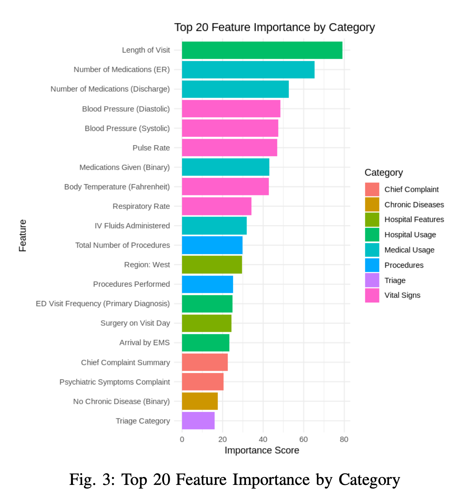

Predicting Emergency Department Disposition with Statistical Learning
2025 Statistical Learning course project | Portfolio summary
Retrospective, exploratory modeling of public U.S. emergency-department survey data.
A course project demonstrating a statistical-learning workflow, not a clinical decision rule.
Project question and course scope
Question
Can structured ED encounter data distinguish several clinically and operationally meaningful disposition-related outcomes?
- 2022 NHAMCS Emergency Department public-use data: 16,025 visits and a high-dimensional feature space.
- Semester-long Statistical Learning final project; emphasis was on methods taught in the course rather than deep learning.
- Compared regularized regression, kernel learning, bagging, and boosting while emphasizing cross-validation and interpretation.
- We deliberately simplified a complex set of non-mutually-exclusive disposition indicators into a tractable multiclass learning task.
Admit — 2,302
Returned — 2,053
Discharge — 1,202
Left early — 748
Transfer — 452
6,757 visits across five mutually exclusive modeled classes.
Before modeling: understand how the outcome is recorded
Marginal frequency of raw disposition indicators
First analytical observation
The 16 Yes/No fields should not automatically be treated as 16 equivalent competing classes.
RETREFFU alone is marked Yes for 67.5% of visits, suggesting that follow-up information often coexists with a more specific disposition or care-trajectory indicator.
This motivated examining within-visit overlap before defining the modeling target.
Outcome EDA: overlap is structured, not random
Most common co-occurrences
| Combination | Visits |
|---|---|
| RETREFFU + RETRNED | 1,693 |
| ADMITHOS + OBSHOS | 147 |
| ADMITHOS + RETREFFU | 72 |
| OBSDIS + RETREFFU | 54 |
| OTHDISP + RETREFFU | 40 |
| LBTC + LEFTAMA | 19 |
What this tells us
- RETRNED + RETREFFU: a specific return outcome can coexist with follow-up information.
- ADMITHOS + OBSHOS: some indicators describe related or sequential stages of care.
- LBTC + LEFTAMA: multiple original indicators can ultimately represent the same conceptual outcome group.
The raw fields mix destination, care trajectory, and follow-up information. Defining the response variable was therefore an analytical step, not just a recoding step.
Outcome operationalization: from 16 indicators to 5 classes
16 binary indicators Yes / No
Non-mutually-exclusive
Resolve overlaps Apply predefined priority rule
to select one disposition
Restrict analytic scope Exclude death / DOA, other,
no answer, and follow-up
11 labels → 5 classes Mutually exclusive
modeling target
| Final class | Original labels retained |
|---|---|
| Transfer | TRANNH, TRANOTH, TRANPSYC |
| Admit | ADMITHOS, OBSHOS, OBSDIS |
| Returned | RETRNED |
| Discharge | NOFU |
| Left early | LBTC, LEFTAMA, LWBS |
For a semester Statistical Learning project, we operationalized a single outcome so that model comparison, cross-validation, and class-specific interpretation remained tractable and clear.
This priority hierarchy was an analytical choice, not a clinically validated disposition standard.
From survey data to a modeling matrix
NHAMCS 2022
16,025 ED visits
913 variables
Candidate selection
188 variables
selected from codebook
Preprocessing
Missingness · encoding
imputation
Modeling
5-class outcome
stratified CV
Feature domains
Demographics, triage, injury, hospital utilization/characteristics, chief complaint, diagnosis, procedures, chronic disease, vital signs, and medications.
What I would tighten today
Fit imputation, encoding, rare-level handling, and any feature selection inside training folds; document the target hierarchy and analytic cohort as part of the reproducible pipeline.
Model comparison: performance vs. interpretability
| Model | Accuracy | Precision | Recall | F1 | AUC |
|---|---|---|---|---|---|
| Lasso multinomial LR | 0.724 | 0.681 | 0.604 | 0.622 | 0.873 |
| RBF SVM | 0.509 | 0.599 | 0.576 | 0.523 | 0.898 |
| Random Forest | 0.715 | 0.652 | 0.596 | 0.609 | 0.893 |
| XGBoost | 0.738 | 0.679 | 0.618 | 0.636 | 0.893 |
XGBoost
XGBoost
SVM
Reported values from the 2025 project. The report does not fully specify the multiclass averaging convention for precision/recall/F1/AUC; a revised analysis should define this explicitly and add class-specific metrics.
Where did the models succeed and struggle?

Random Forest confusion matrix reproduced from the original portfolio deck.
- Admit and Returned, the two largest modeled classes, were comparatively well identified.
- Transfer was often confused with Admit, consistent with both involving continued care while differing in destination and resource context.
- Discharge and Returned were also confused, highlighting the difficulty of distinguishing a later return from a visit ending in discharge using encounter-level features alone.
- The error structure is as informative as overall accuracy when thinking about what context may be missing.
Interpretability: useful patterns, careful language

- Feature importance highlighted length of visit, medication counts, vital signs, and procedures.
- Partial dependence plots were used to inspect nonlinear model associations for length of visit and pulse across classes.
- Lasso multinomial regression supplied class-specific sparse coefficients as a complementary, more transparent view.
- These are predictive associations, not causal effects or clinical thresholds.
- Some high-importance variables occur after substantial care has happened, so usefulness depends on the intended prediction time.
What I would improve for a clinical research setting
- Define the intended prediction time and clinical/operational use case first.
- Revisit the five-class outcome and priority hierarchy with ED clinicians.
- Consider whether some original indicators should be separate endpoints or sequential outcomes instead of forcing one label.
- Respect NHAMCS survey design for population-level inference.
- Use fold-contained preprocessing and nested tuning.
- Remove downstream variables unavailable at the chosen prediction time.
- Report per-class sensitivity/PPV, macro-F1, calibration, and uncertainty intervals.
- Compare with simple baselines and validate externally before deployment claims.
Takeaway
A course project that taught me both how to build models and how much the definition of the clinical question matters.

Statistical learning
Regularization, SVM, Random Forest, XGBoost, cross-validation, and tuning.
Data reasoning
Interrogate a messy outcome, operationalize the target, inspect errors, and interpret predictor patterns.
Next step
Refine outcome and prediction timing with practitioners, then redesign validation around the clinical workflow.
Source: 2022 National Hospital Ambulatory Medical Care Survey (NHAMCS) ED public-use data. Original work: 2025 Statistical Learning final project.